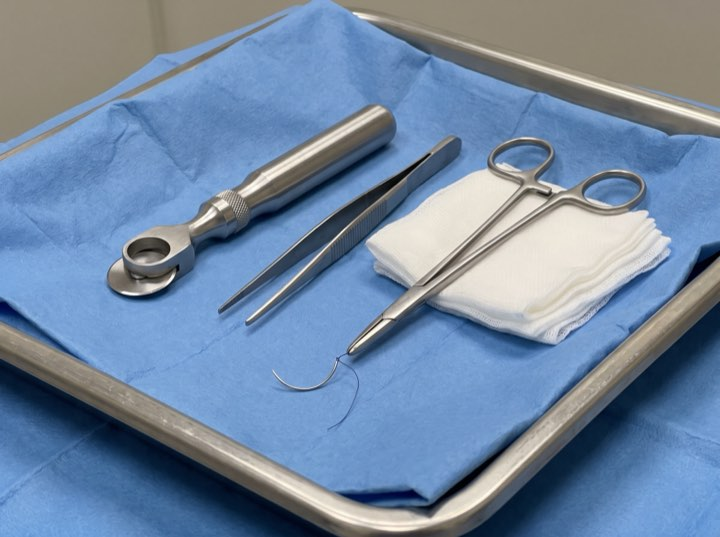
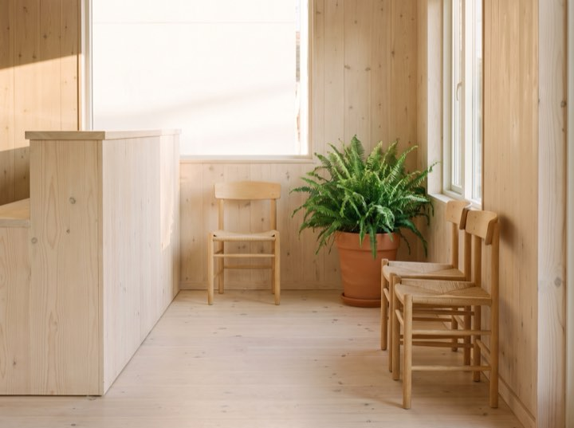
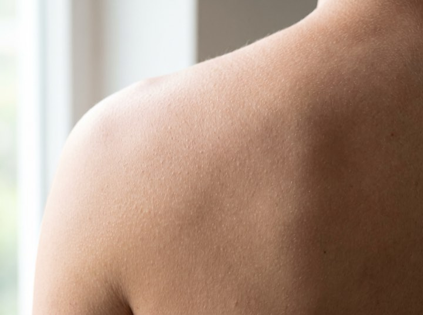

Skin cancer & Mohs surgery
Screening, biopsy and Mohs micrographic surgery on site, so diagnosis and removal don't mean two separate waits.
Medical · Surgical · Cosmetic
Medical dermatology, skin cancer surgery and a separate cosmetic clinic. Routine skin checks book about two weeks out, and we hold urgent slots every single week for the things that shouldn't wait.
Typical skin check wait
Services
Medical dermatology runs on insurance and referral. The cosmetic clinic runs separately, with its own booking and published pricing.
Screening, biopsy and Mohs micrographic surgery on site, so diagnosis and removal don't mean two separate waits.
Acne, eczema, psoriasis, rosacea and hair loss. Most insurance accepted, and biologics managed in house.
Eczema, birthmarks and adolescent acne, in appointments long enough for a child to settle.
Injectables, lasers and medical-grade skincare, with published pricing. Booked separately from medical visits.
I found something in November and was terrified. Their site said two weeks for a skin check and I got in in nine days. The biopsy and the removal happened in the same building.Gordon E. · Skin cancer patient
Process
Medical and cosmetic run on different calendars and different money. Getting this right saves you weeks.
Worried about a spot, a rash or a mole? Medical. Wanting to change how your skin looks? Cosmetic. If unsure, book medical.
Online, with insurance details taken up front, so the first visit isn't twenty minutes of paperwork.
Full-body skin checks run about thirty minutes. Anything suspicious is biopsied the same visit wherever possible.
Pathology back within a week, delivered by a person on the phone, with the next step already scheduled.
Inside two weeks
A full-body check with the dermatoscope, the biopsy if it needs one, and the lab in the same building.





Don't sit on it. Skin checks are booking about two weeks out and we hold urgent slots every week for exactly this reason.
Most major insurance accepted. Urgent slots held weekly, so ring rather than booking online if something has changed quickly.